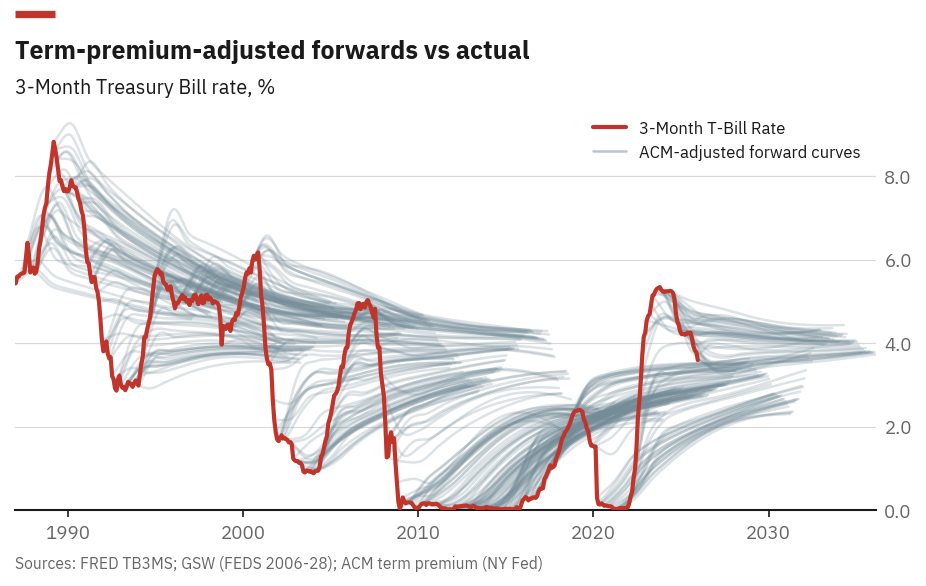
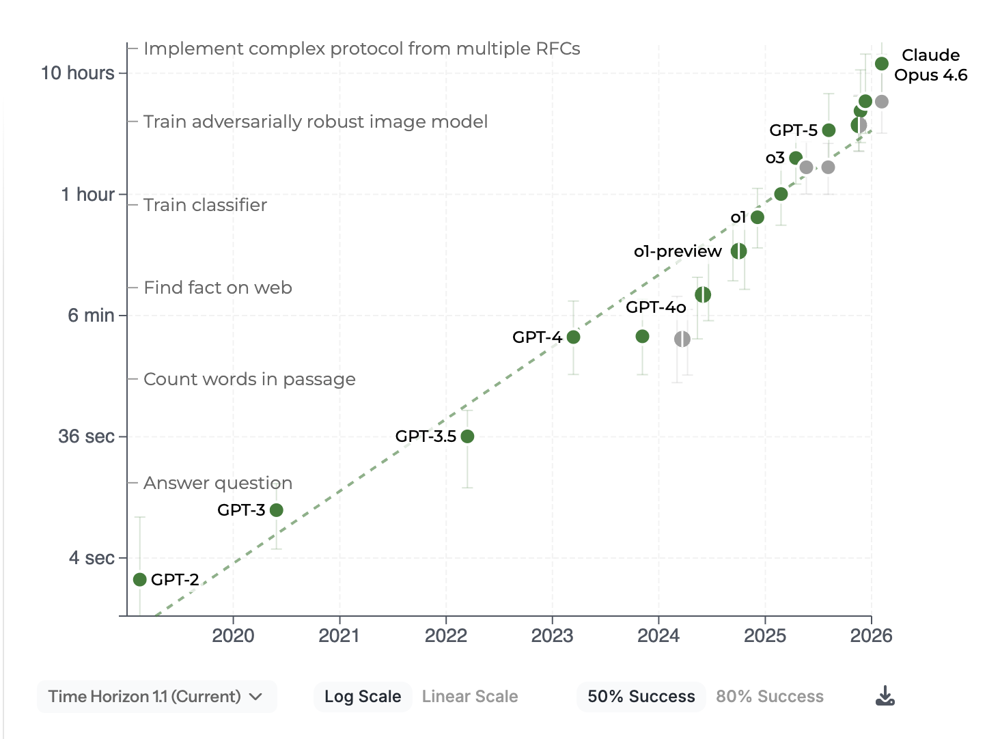
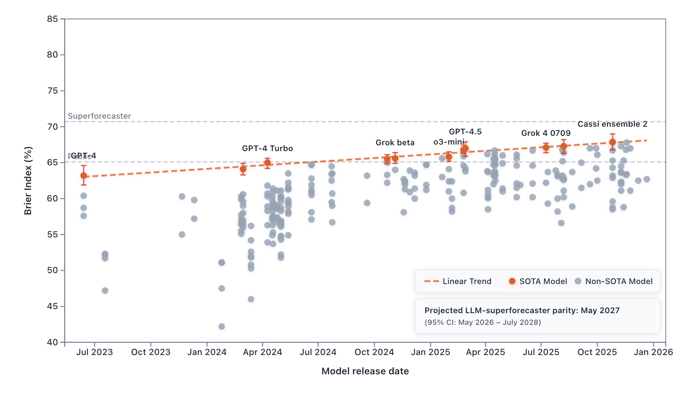
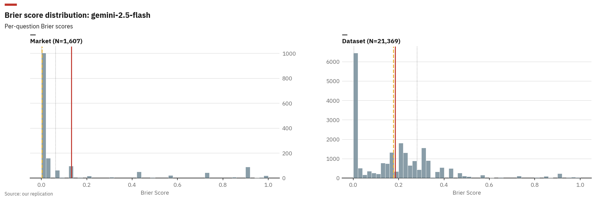
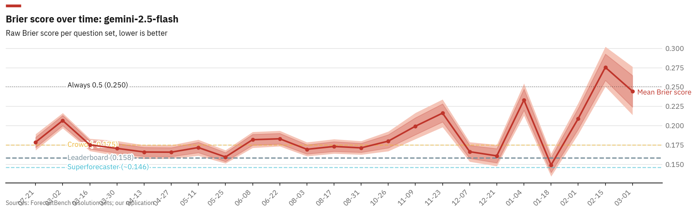
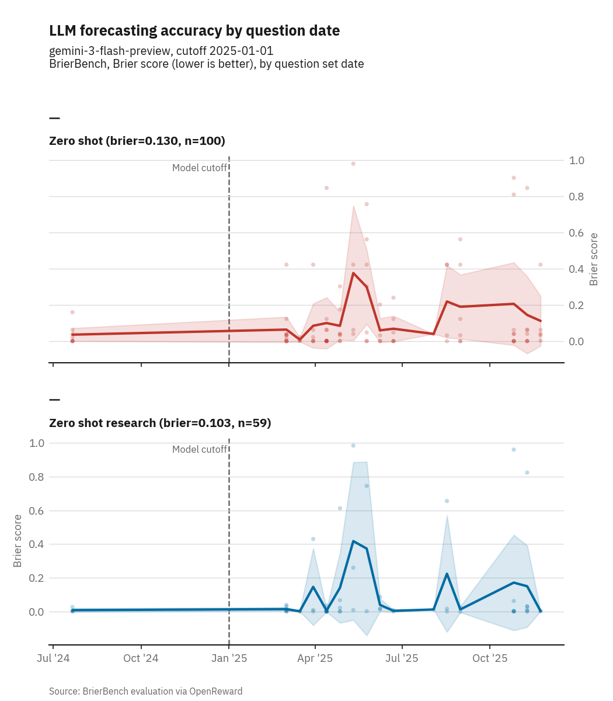
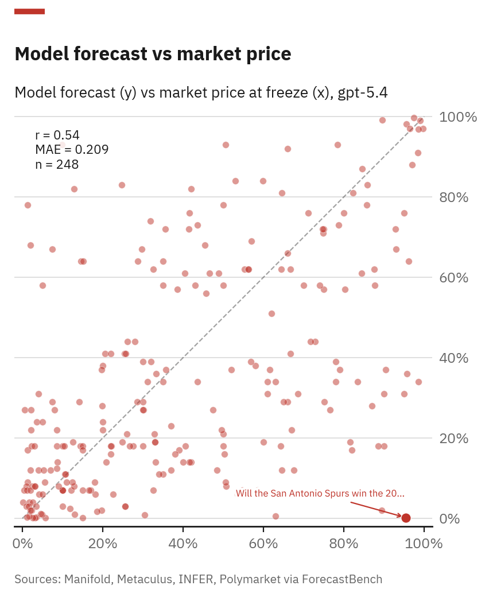
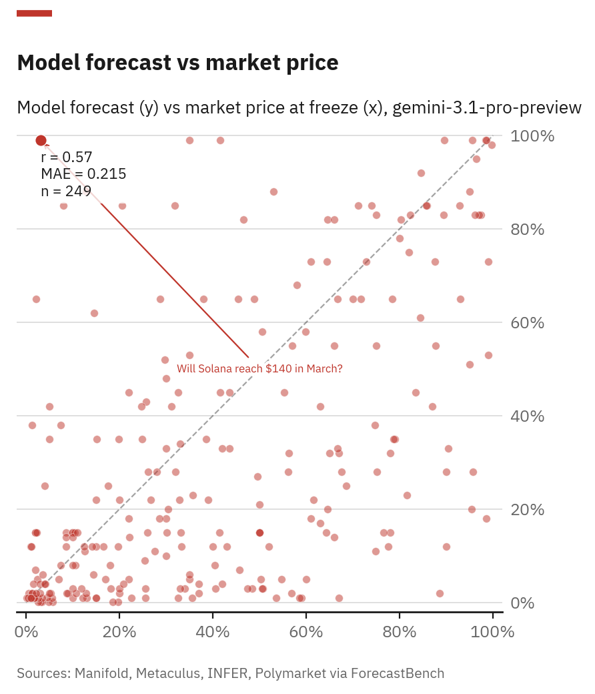
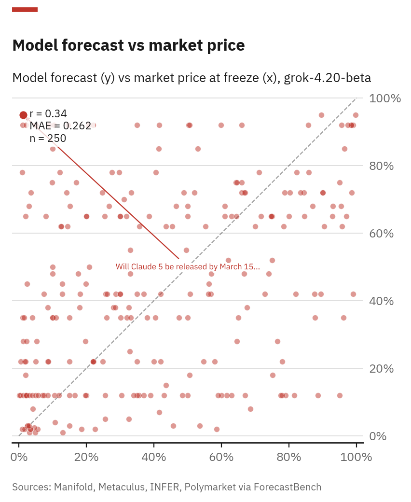
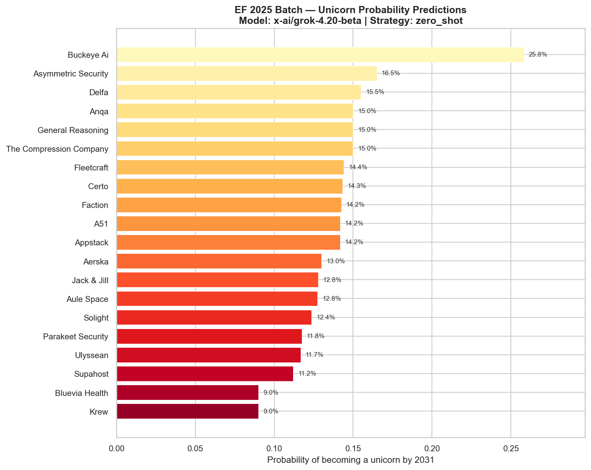

ForecastBench Replication
Evaluating frontier models against prediction markets & superforecasters
Builders Retreat · March 2026Motivation

40 years of forward curves vs reality. Markets are systematically wrong about future rates. Can LLMs do better?
Context

METR autonomy evals: time horizon of tasks AI agents can complete has gone from seconds to 12 hours. Autonomous agents need to predict consequences of their actions.
The Benchmark

LLM forecasting ability is improving steadily. Projected superforecaster parity: May 2027 (95% CI: May 2026 – July 2028). Contamination-free: 500 live questions every 2 weeks.
Experiment 1
Ran all 24 question sets via OpenRouter. Raw Brier scores closely match the official leaderboard.
| Metric | Ours (N=22,829) | Leaderboard | Delta |
|---|---|---|---|
| Brier (dataset) | 0.185 | 0.170 | +0.015 |
| Brier (market) | 0.132 | 0.146 | −0.014 |
| Brier (overall) | 0.181 | 0.158 | +0.023 |
Cohen's d = 0.12 (negligible). Statistically significant but practically identical.
Our Contribution
We packaged ForecastBench as a reusable evaluation environment on OpenReward. Any LLM agent can be benchmarked with a single API call — zero-shot, with web research, or with structured forecast strategies.
Experiment 1

Market questions cluster near 0 (easy wins). Dataset questions spread wider — time-series forecasting is harder than binary market questions.
Experiment 1

Per-question-set Brier scores over time. The leaderboard baseline (0.158) is close to our mean. Recent sets trend higher due to unresolved long-horizon forecasts.
BrierBench

Brier scores by question date. Research strategy (web search) improves accuracy. Post-cutoff questions are harder — no training data leakage.
Forecast Skill
%%{init: {'theme': 'dark', 'themeVariables': {'primaryColor': '#3d2022', 'primaryTextColor': '#e8e6e1', 'primaryBorderColor': '#c44e52', 'lineColor': '#555550', 'secondaryColor': '#2a3a56', 'tertiaryColor': '#2d2d2d', 'fontFamily': 'IBM Plex Sans', 'fontSize': '13px', 'nodeBorder': '#c44e52', 'mainBkg': '#3d2022', 'clusterBkg': '#2d2d2d'}}}%%
graph TD
A{Binary?} -->|Yes| B{Stock direction?}
A -->|No| C{Continuous or discrete?}
B -->|Yes| D[binary_stock_direction]
B -->|No| E{Decomposable?}
E -->|Yes| F[scenario_decomposition]
E -->|No| G{Needs simulation?}
G -->|Yes| H[monte_carlo_binary]
G -->|No| I[scenario_decomposition]
C -->|Continuous| J{Price/index GBM?}
C -->|Discrete| K{Rare events?}
J -->|Yes| L[mixture_lognormal_cdf]
J -->|No| M{Naturally lognormal?}
M -->|Yes| N[direct_lognormal_cdf]
M -->|No| O{Needs simulation?}
O -->|Yes| P[monte_carlo_cdf]
O -->|No| Q[mixture_normal_cdf]
K -->|Yes| R[poisson_pmf]
K -->|No| S{Independent trials?}
S -->|Yes| T[poisson_binomial_pmf]
S -->|No| U[negative_binomial_pmf]
style D fill:#2a3a56,stroke:#4c72b0,color:#7da1d4
style F fill:#2a3a56,stroke:#4c72b0,color:#7da1d4
style H fill:#2a3a56,stroke:#4c72b0,color:#7da1d4
style I fill:#2a3a56,stroke:#4c72b0,color:#7da1d4
style L fill:#2a3a56,stroke:#4c72b0,color:#7da1d4
style N fill:#2a3a56,stroke:#4c72b0,color:#7da1d4
style P fill:#2a3a56,stroke:#4c72b0,color:#7da1d4
style Q fill:#2a3a56,stroke:#4c72b0,color:#7da1d4
style R fill:#2a3a56,stroke:#4c72b0,color:#7da1d4
style T fill:#2a3a56,stroke:#4c72b0,color:#7da1d4
style U fill:#2a3a56,stroke:#4c72b0,color:#7da1d4
Experiment 2

Closest to consensus. Mean |δ| = 0.220. Diagonal = perfect agreement.
Experiment 2

Conservative bias — systematically predicts lower. Bias = −0.083.
Experiment 2

Most contrarian. Mean |δ| = 0.274. Loves extreme probabilities (92–95%).
Key Finding
Superforecasters still win (Brier Index 70.8 vs best LLM 64.2). Contrarianism hurts more than it helps.
Bonus: Applied Forecasting

Grok-4.20-beta zero-shot predictions for which EF 2025 companies become unicorns by 2031.
Do not make decisions based on these numbers. This is a methodology demo, not a forecasting product.